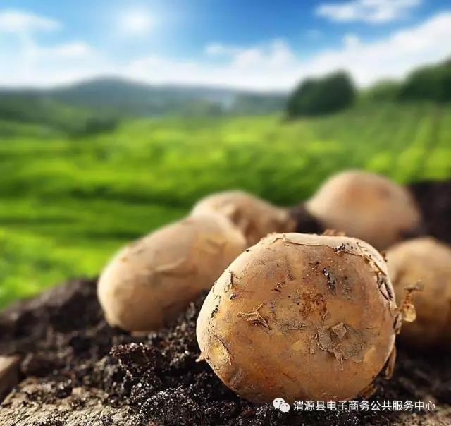

进入六月以来，各地蔬菜水果滞销的消息不断传来：某地的蔬菜收购价格屡破冰点；某地的水果大丰收，价钱却卖不出理想的价位， 赔得果农不忍睁眼；某地的莲花菜卖不出去，直接在田里开花，菜农损失惨重……这种现象，在过去经常会发生在丰收年里，可是为什么近些年来会这样频繁的发生，几乎成为常态？
农产品滞销的原因
市场信息不对称是主要症结之一，不了解市场需求的农产品种植，从一开始就带有盲目性，也注定隐藏着“过剩”的风险，才会有现如今的供给侧结构性改革的政策。 信息交流渠道的缺乏，供需双方虽都十分需要对方，却无法建立起及时有效的沟通，导致了好的农产品虽有产出却见不到利润。
除了农场主们对市场把握不准确，其实还缺少一个重要的元素—农产品品牌，有一个好的品牌，对于市场营销和推广，起着非常重要的作用。 再好的农产品，如果没有销路，就会变成滞销产品，也就无法维系生存，会被市场淘汰。而目前我国的农业产品多、品牌少已经成为一个不争的事实了。如何从偏重规模和数量的“传统农业”，向更加倚重质量和效益的“品牌农业”发展阶段转换?打造农产品品牌化已经刻不容缓了！

农产品品牌化的重要性
在消费者心中，农产品品牌化代表着信赖、安全和高品质，慢慢地对农产品品牌化的需求从各别种类延伸到农产品全产业链中去，例如品牌化粮油、品牌化蔬果、品牌化水产、品牌化肉制品等等。
当品牌做得很好时，产品就区别于其它大多数同类产品，这时它的产品就不仅仅只是有它本身的价值了，品牌的价值就附加到它的产品上，自然可以比其实普通的产品卖出更高的价。
如何应对农产品滞销问题
1、品种差异化
随着科学技术的不断发展，新的农业技术层出不穷，像植保无人机、大型拖拉机、播种机、插秧机等，大大提高了农业生产率，增加了农产品的产量。 当数量达到一定程度的时候，就要开始讲究质量了。现如今人们的生活水平提高，消费观念的更新，对农产品的消费需求开始出现了猎奇和新颖的心理。 因此，农产品赚钱不能再依靠量取胜，而是要转向优质、品种差异化，培养出具有特色的农产品。
2、反季节化策略由农产品生产的季节性与市场需求的均衡性的矛盾带来的季节差价，蕴藏着巨大的商机。要开发和利用好这一商机，关键是要实行“反季节供给高差价赚取”策略。 实行反季节供给，主要有三条途径：首先是尽可能使产品提前上市；其次是通过科学手段，使农产品销售期可以延长，让生产旺季销售变为淡季销售；最后是开发适应不同季节生产的品种，实行多品种错季生产上市。
3、品牌塑造没有树立品牌化的农产品，在每年农产品丰收季节，生产的农产品供应远远大于市场需求时，传统、单一的销售渠道不足容纳过多农产品流通， 造成很多农产品低价出售还无人购买，甚至出现滞销现象，想要在众多参差不齐的农产品脱颖而出，就需要具有独特的属性或是标识，所以现在是建立农产品品牌化最好的时机。
站在“互联网+”的风口上，农业行业正加快“自我革命”的步伐，只有转变传统的种植模式和营销思路，利用各方有利资源发展农业、开拓农产品销售渠道，才能打造出具有竞争力的品牌。